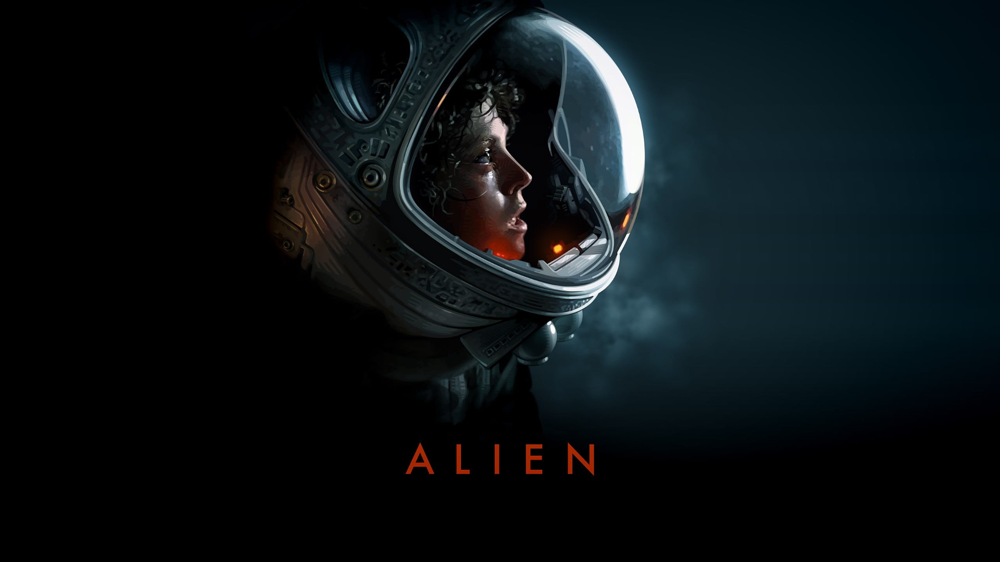
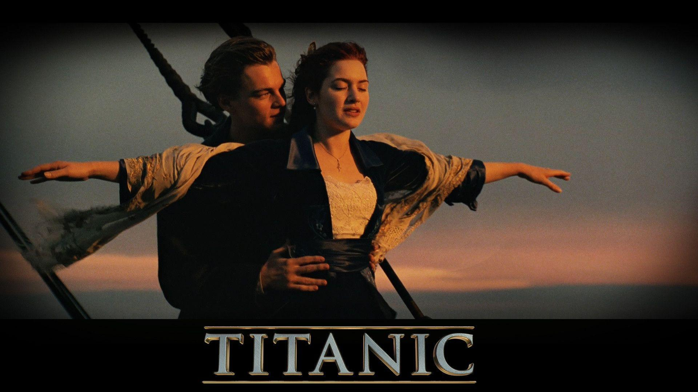

Set in the far future, it stars Sigourney Weaver as Ellen Ripley, the sole survivor of an alien attack on her ship. When communications are lost with a human colony on the moon where her crew first saw the alien creatures, Ripley agrees to return to the site with a unit of Colonial Marines to investigate. Michael Biehn, Paul Reiser, Lance Henriksen and Carrie Henn are featured in supporting roles.

Incorporating both historical and fictionalized aspects, it is based on accounts of the sinking of RMS Titanic and stars Kate Winslet and Leonardo DiCaprio as members of different social classes who fall in love aboard the ship during its ill-fated maiden voyage. The film also features Billy Zane, Kathy Bates, Frances Fisher, Gloria Stuart, Bernard Hill, Jonathan Hyde, Victor Garber, and Bill Paxton.
Avatar (marketed as James Cameron's Avatar) is a 2009 epic science fiction film directed, written, co-produced, and co-edited by James Cameron and starring Sam Worthington, Zoe Saldana, Stephen Lang, Michelle Rodriguez, and Sigourney Weaver. It is the first installment in the Avatar film series. It is set in the mid-22nd century, when humans are colonizing Pandora, a lush habitable moon of a gas giant in the Alpha Centauri star system, in order to mine the valuable mineral unobtanium. The expansion of the mining colony threatens the continued existence of a local tribe of Na'vi, a humanoid species indigenous to Pandora.
Distributed by 20th Century Studios, it is the sequel to Avatar (2009) and the second installment in the Avatar film series. Cast members Sam Worthington, Zoe Saldaña, Stephen Lang, Joel David Moore, CCH Pounder, Giovanni Ribisi, Dileep Rao, and Matt Gerald reprise their roles from the original film, with Sigourney Weaver returning in an additional role while Kate Winslet joined the cast. It follows a blue-skinned humanoid Na'vi named Jake Sully (Worthington) as he and his family, under renewed human threat, seek refuge with the aquatic Metkayina clan of Pandora, a habitable exomoon on which they live.